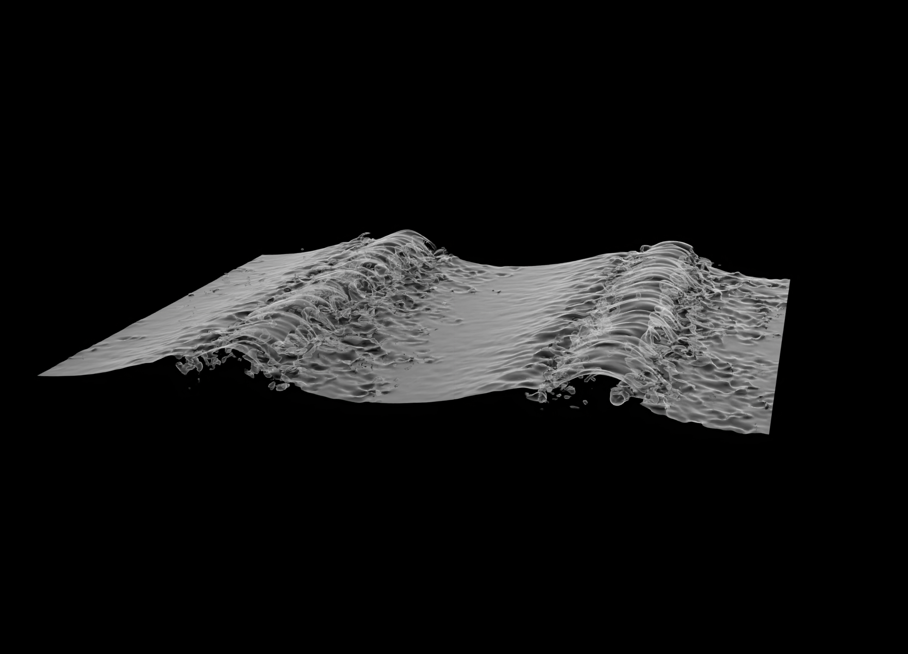

Welcome to my personal website
Hello! My name is Min Lu, and I am a postdoctoral researcher at the Institute of Mechanics, CAS.
I am interested in conducting numerical studies on liquid-gas flow, focusing on turbulent bubbly flows, wave breaking, and related phenomena.
Education
- Ph.D. in Fluid Mechanics, University of Chinese Academy of Sciences, 2020 - 2023
- Visiting in Mechanical Engneering, Johns Hopkins University, 2018 - 2019
- B.Sc. & M.Sc. in Energy and Power Engineering, Nanchang University, 2013 - 2020
Contact
- Email: lumin@imech.ac.cn